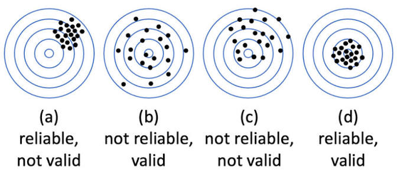
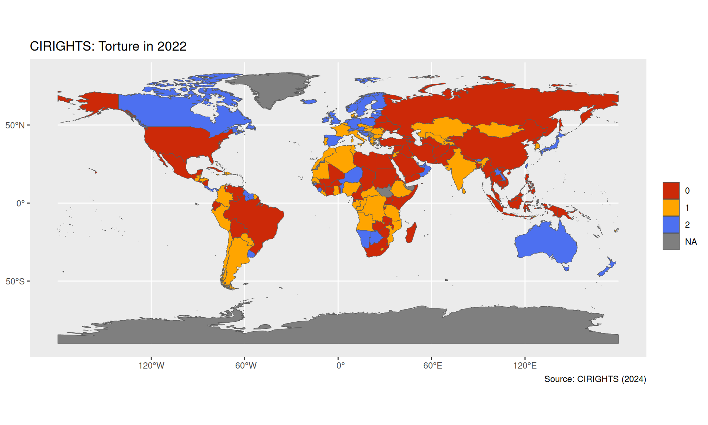
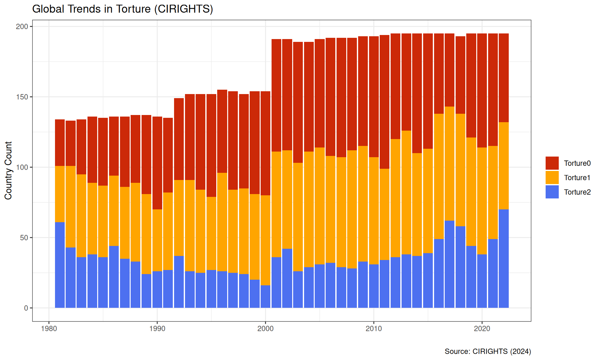
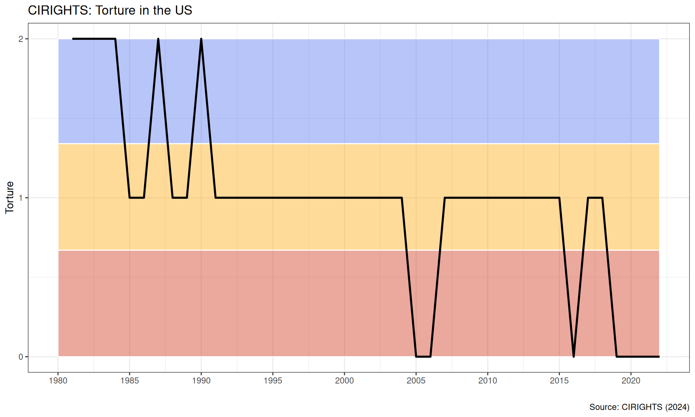

Section 2: How effective have international institutions been in reducing the use of torture by governments around the world?
Justin Leinaweaver (Fall 2026)

The CIRIGHTS measure of torture is (NOT) sufficiently valid and reliable for answering our research question
Cross-national Comparisons: Same Year, Different Countries
Longitudinal Comparisons: Different Years, Same Country
Longitudinal, Cross-national Comparisons: Different Years, Different Countries
Report back your findings from univariate analysis of the CIRIGHTS torture data



Evaluating the V-Dem measures of torture
Evaluate the methodology for strengths and weaknesses
Find us something interesting in the data